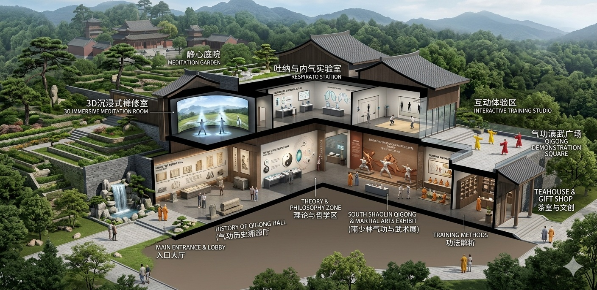

中华气功博物馆简介
关于气功
我们钦佩这样的人：他们精力充沛地度过一生，以自信与从容应对生活中的每一个挑战或艰难阶段；凭借其非凡的个人魅力与乐观精神，他们能为周围的人带去喜悦与积极的生活感受。这些人之所以能拥有这一切，其奥秘在于：生命原力——“气”——在他们的身心之中正自由顺畅地流淌。
根据拥有数千年历史的中国古老智慧，宇宙能量“气”赋予了植物、万物乃至人类以生命活力。自我们呱呱坠地之时起，体内便蕴藏着一股“气”的潜能，若无损耗，这股潜能本足以维持约120年的生命。然而，我们必须悉心呵护这得之不易的先天之气。
现实生活中的种种境遇往往并非尽善尽美——我们承受着压力，遭受环境污染的侵袭，或因受伤而损耗元气；这些因素不仅会削减体内的“气”，更会引发气机阻滞，从而阻碍“气”的自由运行。此类气机阻滞极易引发身心层面的病患——值得注意的是，传统中医理论并不将这两种病症割裂开来，因为它始终将人视为一个不可分割的整体。
我们完全有能力去呵护、滋养体内的“气”，并确保其始终保持自由顺畅的流淌状态。若想达成这一目标，定期习练气功将是极其行之有效的方法；而在习练气功的同时，我们亦能借此修养身心，培植德行。
“气”一词常被译作“呼吸”或“空气”。然而，其真正的内涵远比这些表层含义要深邃与广博得多。“气”是中国哲学与传统中医理论中一个至关重要的核心概念。它既代表着个体生命所独有的原动力，亦象征着整个宇宙所蕴含的生命能量。
“功”意指精湛的技艺或功夫，它与个人的能力及技能紧密相关。因此，“气功”一词可被理解为对“气”所进行的持之以恒的修炼与磨砺；若从更为高深的层面来解读，它则代表着一种能够驾驭并掌控“气”的能力——借此能力，习练者方能实现身心康健与自我疗愈。
继续参观
探索中华气功文化
从历史源流、主要流派、哲学理论到传统中医，循着不同主题进一步了解气功的文化脉络。
